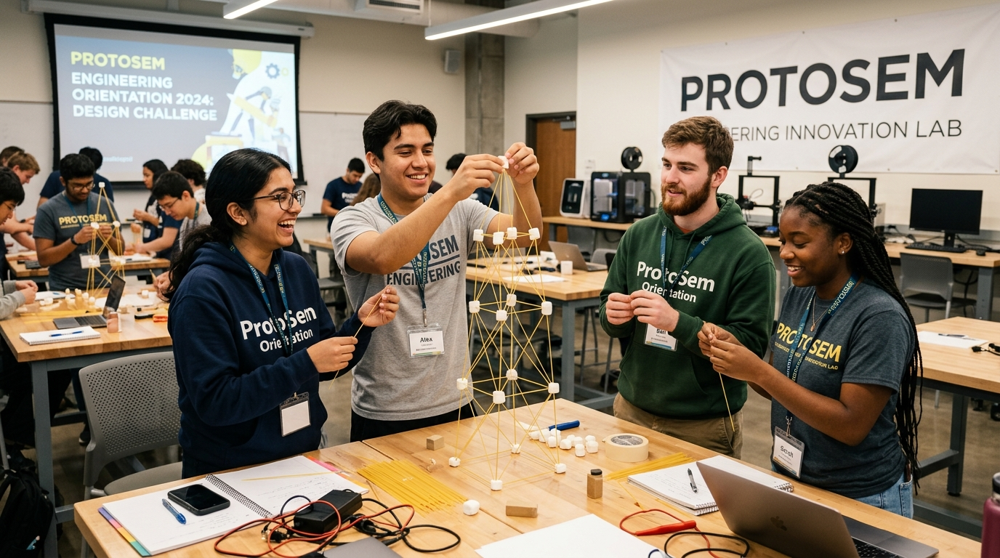
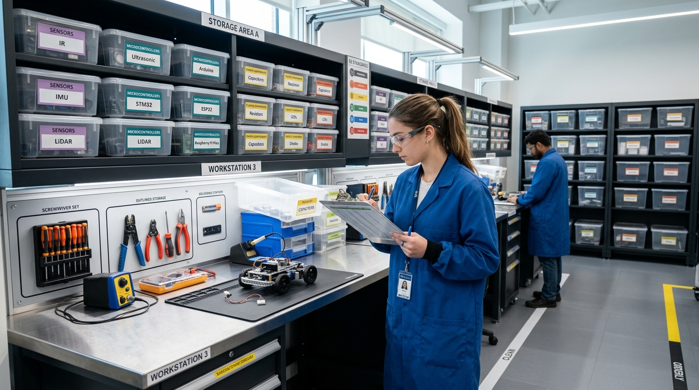
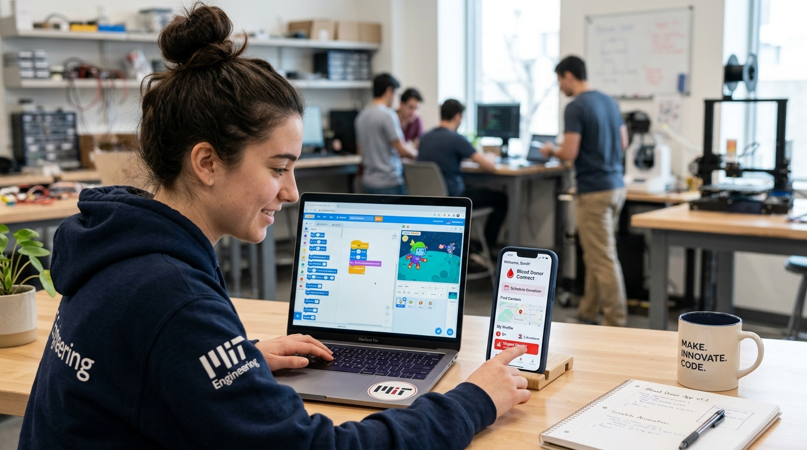
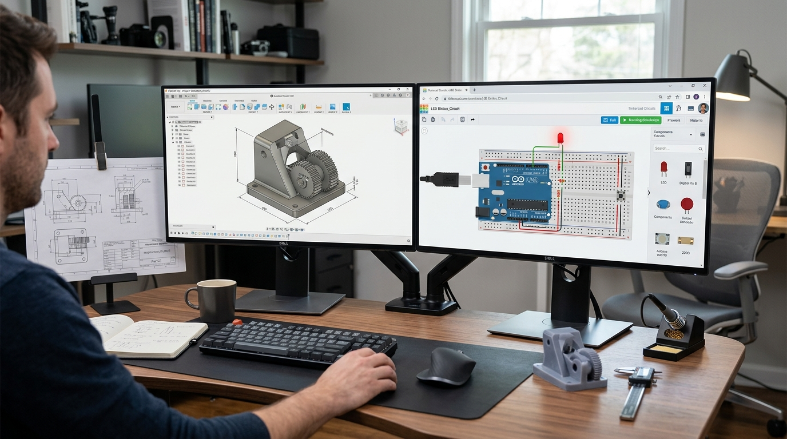
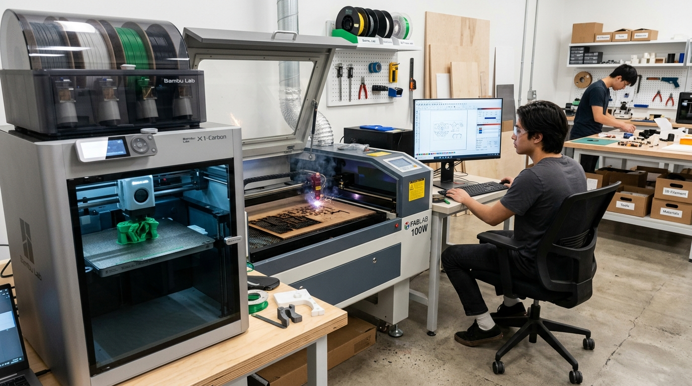
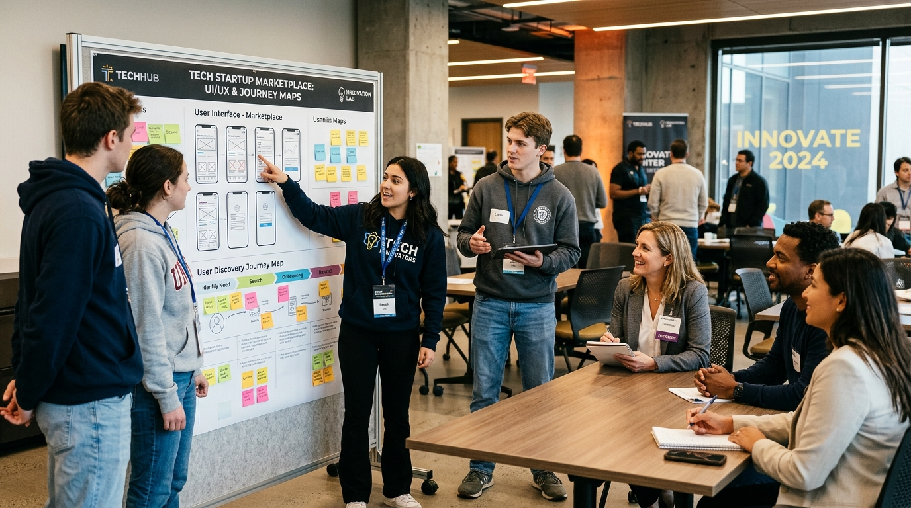
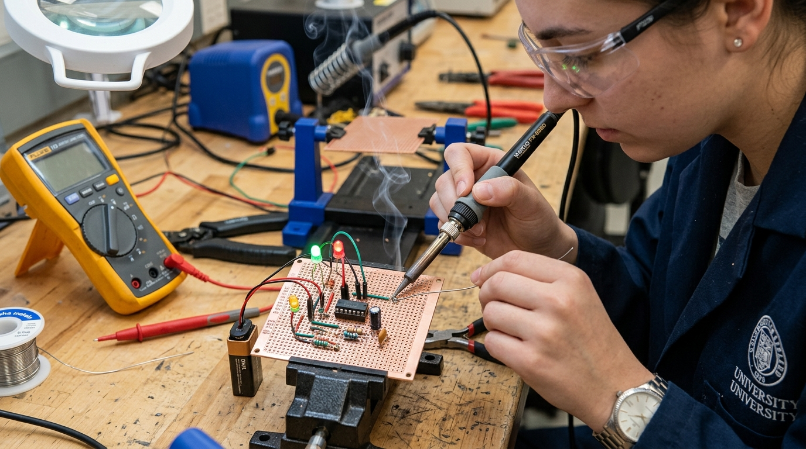
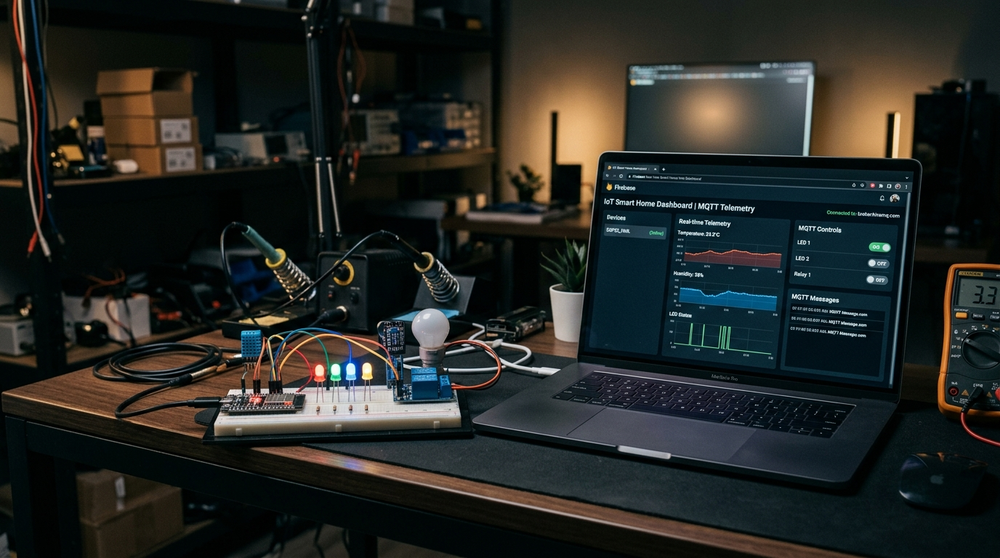

ProtoSem — a weekly learning journal.
Each box below is one week. Click a week to open it and see what I studied, what I built, and what it taught me.
Week 0
July 2026Orientation and Kick Start
Initiated the ProtoSem journey with immersive orientation sessions designed to break traditional academic mindsets and foster rapid iterative engineering instincts. We explored reflective philosophical readings from Zenpencils, discovered individual psychological archetypes via the 16 Personalities framework (ESFJ Consul profile), and tackled the famous Marshmallow-and-Spaghetti tower challenge to learn rapid prototyping dynamics under pressure.
Topics Learned
- ProtoSem curriculum objectives, milestones, and hands-on innovation culture
- The Marshmallow Challenge: Rapid prototyping, testing assumptions early vs. late structural failure
- Zenpencils reflective reading: Cultivating grit, purposeful inquiry, and creative resilience
- 16 Personalities assessment: Understanding the ESFJ Consul archetype and collaborative team strengths
Key Takeaways
- Prototyping early beats endless planning: building immediately exposes physical structural flaws before the deadline
- Empathy and open communication are fundamental to high-velocity mechatronics teamwork
- Recognizing your behavioral archetype enables smoother delegation and technical synergy
Reflection
The marshmallow challenge was an unforgettable lesson in engineering humility: teams that spend 15 minutes debating schematics and only 1 minute building almost always watch their tower collapse under the weight of the marshmallow. Discovering my ESFJ Consul archetype reinforced my natural drive for harmony and structured team organization, which I intend to channel throughout every lab sprint in ProtoSem.
Week 0 Gallery & Photos

Resources Used
- Tom Wujec — The Marshmallow Challenge Design Framework
- Zenpencils Illustrated Motivational & Philosophical Anthology
- 16Personalities Assessment & Myers-Briggs Type Indicator (MBTI) Team Guide
Week 1
July 20265S in the Lab, Controllers & Sensors Team, and Going Online
Practiced the 5S methodology as part of the Controllers and Sensors team — counting and listing lab components, then arranging and labeling them in cupboards so anyone on the team can find them. Also set up my portfolio website and GitHub account this week.
Topics Learned
- 5S methodology (Sort, Set in order, Shine, Standardize, Sustain)
- Working as part of the Controllers and Sensors team
- Counting and listing lab components for inventory
- Arranging components in cupboards and marking their locations
- Creating and structuring a personal portfolio
- Setting up a GitHub account
Key Takeaways
- 5S turns “where is it?” into a five-second answer for the whole team
- Counting components early avoids duplicate orders and lost parts later in the semester
- Clearly marked storage locations save everyone time, not just the person who organized it
- Having a portfolio and GitHub live from week one makes it easy to document every week after
Reflection
Organizing the components taught me more about our lab's hardware than any lecture could — I now know what we have, how much of it, and where it lives. Setting up the portfolio and GitHub in the same week felt right: this journal and my code will grow together from here.
Week 1 Gallery & Photos

Resources Used
- 5S methodology reference guide
- GitHub Docs — creating an account & first repository
Week 2
July 2026Beyond Coding: Building the Mindset Behind Great Software
This week expanded my perspective on what it means to be a software developer. While writing code remains an essential skill, I discovered that building impactful software also requires innovation, empathy, collaboration, and a deep understanding of user needs.
The week began with an inspiring LeanSpark session by Prof. Mukesh Sudh, where I explored the concept of the Frugal Mindset. Meaningful innovation is not driven by abundant resources, but by the ability to solve real-world problems creatively with the resources available.
As part of a five-member team, I participated in the Think Like a Coder Challenge, where collaboration became just as important as coding. Working together strengthened my analytical thinking, communication, and teamwork.
Designed a 2-minute animated story using Scratch, exploring how programming can be combined with storytelling. Demonstrated that programming can be both educational and creative.
Built a functional Blood Donor application using MIT App Inventor. Gained hands-on experience in rapid application development and how ideas evolve into working prototypes without large codebases.
Successful software begins with understanding people before writing code. Explored how user-centered thinking leads to better products and meaningful solutions.
Key Takeaways
- Successful software engineers don't just build applications — they understand users, think creatively, and collaborate effectively
- Coding is only one piece of the puzzle; innovation, design thinking, communication, and product mindset are equally important
- Frugal innovation unlocks elegant solutions even when physical and computing resources are limited
Reflection
Week 2 completely changed my perspective on software development. Every activity this week contributed a different perspective, reinforcing that impactful software is created at the intersection of technology, creativity, and human-centered design.
Week 2 Gallery & Photos

Resources Used
- Prof. Mukesh Sudh — LeanSpark Frugal Mindset Lectures
- MIT App Inventor Educational Environment & Block Coding
- Scratch MIT Visual Storytelling Framework
- Stanford d.school Design Thinking Bootleg
Week 3
August 20263D Modelling & Electronics
Week 3 of my ProtoSem journey was an exciting combination of 3D modelling, CAD design, and electronics. It was a week where I got to explore both digital design and the fundamentals of electronic systems — a completely different experience from anything I'd tried before.
Exploring Fusion 360 & Part Modelling from a Reference Image
I started by learning the fundamentals of 3D modelling in Fusion 360, including sketches, dimensions, constraints, extrusions, and different modelling features. Instead of simply following steps, I tried to understand what each tool was doing and how different features could be combined to create a complete component.
One of the activities I worked on was part modelling based on a reference image — observing its geometry and proportions, then converting that visual reference into a 3D model. This taught me that CAD modelling is as much about planning the process as it is about the final look.
Electronics & Tinkercad Simulation
Through electronics and Tinkercad, I started understanding how components can be connected to create simple functional circuits, validating current paths, and checking resistor-LED calculations before breadboarding.
Key Takeaways
- Engineering is not limited to learning a single tool or technology — digital CAD and electronic circuits work in harmony
- CAD modelling requires strategic feature tree planning rather than jumping into extrusions immediately
- Mistakes in 3D modeling and circuit wiring are valuable learning stepping stones
Reflection
One of my biggest takeaways from this week is that engineering is not limited to learning a single tool or technology. Through Fusion 360, I learned how ideas and physical objects can be transformed into digital 3D models. Through electronics and Tinkercad, I started understanding how components can be connected to create simple functional circuits. Most importantly, I learned the value of learning by doing. There were moments when I made mistakes, went back to previous steps, changed my approach, and tried again — but every mistake helped me understand the process better. Before this week, Fusion 360 and electronics were areas I had very limited practical experience in. Now, I have a basic foundation in both, and more importantly, the curiosity to explore them further.
Week 3 Gallery & Photos

Resources Used
- Autodesk Fusion 360 Official Tutorials & Parametric Design Docs
- Autodesk Tinkercad Circuits Simulation Platform
- Engineering Reference Blueprints & Caliper Measuring Guides
Week 4
August 2026Animation, Laser Cutting & 3D Printing
Week 4 of my ProtoSem journey was focused on exploring animation, digital fabrication, and 3D printing. I continued developing my skills in Fusion 360 and then moved into practical fabrication using RDWorks for laser cutting. I also got introduced to 3D printing using Bambu Lab, which helped me understand how digital designs can be transformed into physical prototypes.
Topics Learned
- Kinematic joints and motion animation in Autodesk Fusion 360
- Digital fabrication pipeline: Exporting 2D DXF profiles to RDWorks
- Laser cutting parameters: Laser power, speed, kerf compensation, and focal distance
- 3D printing with Bambu Lab X1: Slicing settings, infill density, supports, and layer heights
Key Takeaways
- Digital fabrication bridges the critical gap between conceptual 3D models and tangible physical parts
- Laser cutting provides instantaneous flat prototyping, while 3D printing allows complex volumetric geometry
- Accounting for material kerf and thermal shrinkage is essential for snap-fit engineering assemblies
Reflection
Operating the Bambu Lab 3D printer and the RDWorks laser cutter demystified rapid prototyping for me. Seeing a CAD sketch turn into an acrylic bracket in minutes made me realize how fast an engineer can test and validate an idea today.
Week 4 Gallery & Photos

Resources Used
- RDWorks Laser Cutter Software Guide
- Bambu Studio Slicing & Filament Settings Handbook
- FabLab Safety & Material Tolerance Manual
Week 5
August 2026UI/UX, Problem Statements & Market Exploration
During Week 5, we were introduced to the fundamentals of UI/UX design and learned how user needs and usability influence product development. We also participated in a marketplace session, where client and startup companies presented real-world problem statements. This gave us an opportunity to understand industry requirements, explore different problem areas, and identify problems that could potentially be developed into practical solutions. We also worked on user discovery and requirement understanding to identify the needs of the target users.
Topics Learned
- Fundamentals of UI/UX design: Wireframing, visual hierarchy, user journey mapping
- Startup marketplace dynamics & evaluating commercial viability of technical challenges
- User discovery interviews: Asking non-leading questions to uncover latent pain points
- Translating ambiguous stakeholder requests into crisp engineering problem statements
Key Takeaways
- The most technically complex solution is useless if it does not address the actual user need
- Direct client interaction reveals nuances that rarely appear in written project briefs
- Early UI mockups and user journey diagrams align interdisciplinary teams before coding begins
Reflection
Participating in the startup marketplace exposed me to how real companies prioritize features. As an engineer, it taught me to step back from technical specs and first ask: “Who is this for, and what friction does this remove from their day?”
Week 5 Gallery & Photos

Resources Used
- ProtoSem Startup Problem Statement Dossier
- Nielsen Norman Group — Usability & Wireframing Principles
- Customer Discovery & Value Proposition Canvas
Week 6
September 2026Microcontrollers, Embedded Systems & Soldering
Week 6 focused on understanding microcontrollers, microprocessors, and embedded systems. We explored the basic architecture and working principles of embedded systems and learned how different sensors and actuators are used to interact with the physical environment. We also had hands-on experience with soldering and desoldering electronic components. As a practical activity, we successfully soldered a 555 timer circuit with LEDs, resistors, and a capacitor, which helped us understand basic electronic circuit connections and hardware assembly.
Topics Learned
- Microcontroller vs. Microprocessor architecture and memory buses
- Sensor and actuator interfacing: Digital logic levels, PWM, and ADC conversions
- Soldering bench safety: Temperature control, tinning, flux application, and desoldering braid
- Hands-on fabrication of a 555 timer astable multivibrator LED flasher on perfboard
Key Takeaways
- A good solder joint is shiny and concave; cold solder joints cause frustrating intermittent bugs
- Understanding hardware timing at the silicon level is critical for real-time control
- Building discrete analog timer circuits solidifies the foundational physics behind modern digital chips
Reflection
Soldering the 555 timer circuit was deeply satisfying. Watching the LEDs blink at precisely the frequency we calculated mathematically proved that our hardware assembly, component values, and solder joints were completely sound.
Week 6 Gallery & Photos

Resources Used
- NE555 Precision Timer Datasheet & Application Circuits
- IPC Soldering & Electronic Hardware Assembly Standards
- Multimeter Continuity & Signal Oscilloscope Diagnostics
Week 7
September 2026IoT, Connectivity & RTOS
Week 7 focused on IoT and connectivity, where we worked with Arduino IDE and ESP32 to develop connected applications. We completed four practical tasks involving web-based LED control, MQTT cloud communication, voice-based control, and a Firebase-powered smart home system. These activities helped us understand how hardware can communicate with web and cloud platforms. We also learned the fundamentals of Real-Time Operating Systems (RTOS) and applied the concepts by developing a small project.
Configured ESP32 as an HTTP web server, serving an asynchronous HTML UI to toggle GPIO pins and control high-power LEDs over a local Wi-Fi network.
Published live sensor temperature and humidity data to a cloud MQTT broker and subscribed to remote command topics with minimal latency.
Integrated speech command processing via webhook relays to trigger physical mechatronic actuators and appliances hands-free.
Connected ESP32 to Google Firebase Realtime Database to synchronize appliance relay states, authentication, and live sensor logging globally.
RTOS Fundamentals
Explored FreeRTOS on dual-core ESP32, learning preemptive scheduling, task priorities, queues, and semaphores to eliminate blocking delays in embedded firmware.
Key Takeaways
- IoT bridges embedded firmware to global web platforms through standard network protocols (HTTP, MQTT, WebSockets)
- Firebase Realtime Database allows seamless bi-directional synchronization between hardware devices and web dashboards
- FreeRTOS transforms microcontrollers from single-threaded polling loops into robust multi-tasking computing nodes
Reflection
Building the Firebase-powered smart home dashboard and exploring RTOS gave me immense confidence in modern IoT architecture. Seeing our ESP32 respond in real time to web commands and voice triggers proved how powerful the combination of mechatronics and software engineering truly is.
Week 7 Gallery & Photos

Resources Used
- Espressif ESP32 FreeRTOS Documentation
- Firebase Realtime Database REST API & Arduino Client Library
- MQTT.org Protocol Specification & HiveMQ Broker
How to Add Week 8, Week 9, and Beyond
To add a new week, simply duplicate the template box below, paste it inside <div class="weeks-grid">, update your titles, text, and photos, and save! It automatically gets the box styling, badge, and click-to-expand animation.
<!-- Reusable Box-Type Week Template -->
<div class="week-box-card" id="week-8">
<div class="week-box-header">
<div class="week-box-left">
<div class="week-badge">W8</div>
<div class="week-box-titles">
<span class="week-num">Week 8</span>
<span class="week-sub">Topic Subtitle</span>
</div>
</div>
<div class="week-chevron">
<svg width="18" height="18" viewBox="0 0 24 24" fill="none" stroke="currentColor" stroke-width="2.2" stroke-linecap="round" stroke-linejoin="round"><polyline points="6 9 12 15 18 9"></polyline></svg>
</div>
</div>
<div class="week-box-body">
<!-- Add Title, Description, Topics, Key Takeaways, Images, Reflection here -->
</div>
</div>